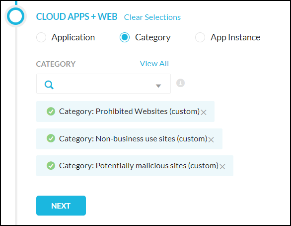
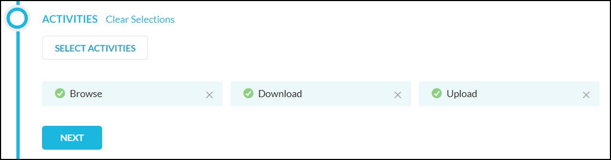
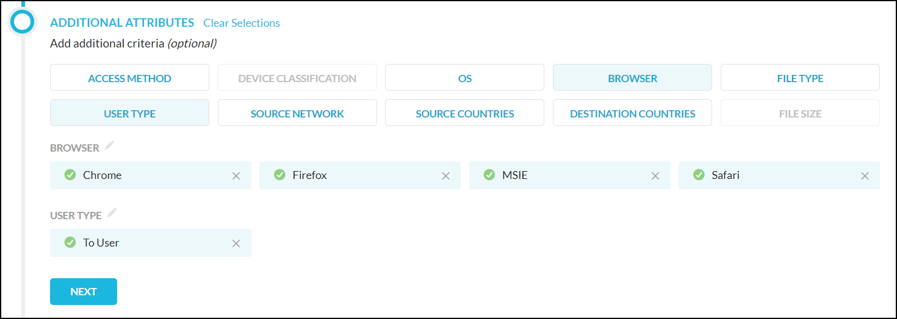

Create a Real-time Protection Policy for Web Categories
When you have visibility into the web traffic and the activities performed by users, the next step is to define policies to enforce your business rules. Policies allow you to enforce an action (like block) based on web categories, users and groups, app activity, and so on. In addition to this, you can also define data loss prevention (DLP) and threat protection profiles to inspect traffic to prevent sensitive and critical data leaks and exposure. For a more detailed view of each policy, click the expand icon adjacent to the name of the policy.
You can move policies by dragging the icon beside the policy name. For more options, like cloning a policy, click the three dots to the far right of this policy to open a menu that enables you to clone, revert, disable, move, and delete policies.
Important
Policies are applied in the order they appear on this page. After you create Real-time Protection policies for web categories, move your Netskope Secure Web Gateway policies to the bottom of the page so they don't interfere with your SaaS traffic Real-time Protection policies.
The Real-time Protection Policies page also allows you to use search filters to find policies for specific users and apps. To use the search filters, click the filter icon to apply one or more filters. You can also search for information by clicking the plus sign to use the predefined filters.
Create an Real-time Protection Policy
Policies are defined using a set of variables. These variables define the criteria for detecting policy violations. When all criteria are matched the specified action is taken.
To create an Real-time Protection policy for Netskope Secure Web Gateway:
Go to Policies > Real-time Protection.
On the Real-time Protection Policies page, click New Policy.
Select the users, user groups, and organizational units you want to include in the policy. Enter text in the search field or select from the dropdown lists to choose who to include. When finished, click Next.

Select Category, and then enter text in the search field or select from the dropdown list what to include.
 Select to use None, a DLP profile, or a Threat Protection profile. To use a DLP or Threat Protection profile, first select DLP or Threat Protection, then click Select Profile, which opens a dialog box that allows you to specify one or more profiles. Use the search field to find predefined or custom options, or select from the options shown, and then click Save. When finished, click Next.

Click Select Activities. In the Activities dialog box, select to detect traffic to or from the user, a constraint if desired (to fine-tune this option), and then select the activities to detect. When finished, click Next.
 To further fine-tune the variables in this policy, click one or more of the Additional Attributes buttons to add more attributes. When finished, click Next.
 Select the action(s) you would like to take, like alert, block, and so on. Some actions allow you to choose a template for the notification sent to the user when the policy detects a violation. When finished, click Next.

Select the notification frequency. Choose None if you don't want an email notification about the policy violation and the resulting action. When you choose Notify once every, you can select the frequency of the email notifications from the dropdown list – 30 Mins, 60 Mins, 6 Hours, 24 Hours. Or, choose Notify after each event.
To finish creating this policy, enter a name and a description. When finished, click Save at the top of the page. A dialog opens to allow you to place the policy, like at the top, and so on. Select on option from the dropdown list, and then click Done.
To modify this policy, click on it and select the pencil icon next to the headings (like Action). After saving your changes, click Apply Changes.